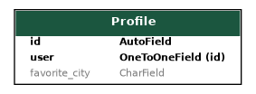
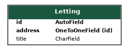
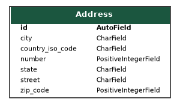
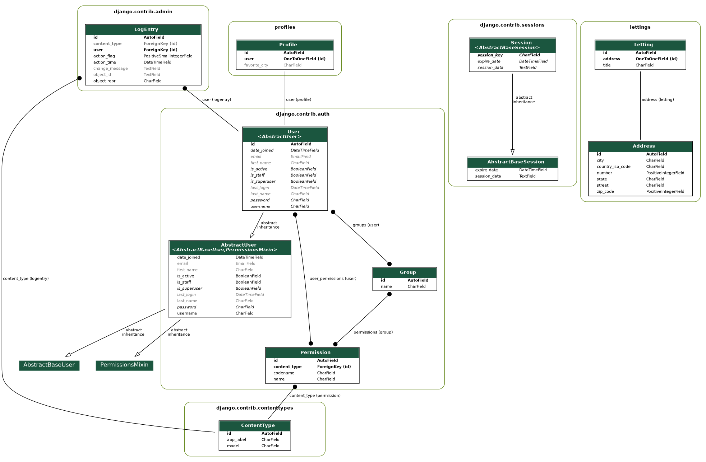

Base de données
Technologie
SQLite3 : SQLite est une bibliothèque écrite en langage C qui propose un moteur de base de données relationnelle accessible par le langage SQL. [1] Dans le cadre de ce projet Django, nous avons opté pour l’utilisation de la base de données SQLite3. Car, SQLite est rapide, autonome, de haute fiabilité et complet. De plus, le format de fichier SQLite est stable, multiplateforme et rétrocompatible.
Plus important encore, Django est configuré pour utiliser SQLite par défaut lors de la création d’un nouveau projet. Dans votre fichier de paramètres Django (settings.py), vous trouverez la configuration de la base de données sous le nom DATABASE. Ce qui nous permet d’avoir une configuration facile.
Vous pouvez accéder à votre base de données SQLite3 de deux manières principales :
Via la ligne de commande SQLite3 CLI : Vous pouvez utiliser l’outil en ligne de commande SQLite3 CLI pour interagir directement avec la base de données, exécuter des requêtes SQL, et examiner les données. Pour utiliser cet outil, assurez-vous d’avoir SQLite3 installé sur votre système (Voir la documentation SQLite pour installation). Puis exécutez la commande suivante pour ouvrir la base de données :
sqlite3 chemin_vers_la_base_de_données
Via l’interface d’administration de Django : Django fournit une interface d’administration conviviale qui permet de gérer facilement les données de l’application. Vous pouvez accéder à cette interface en démarrant le serveur de développement Django et en vous rendant sur la page d’administration dans votre navigateur web a l’adresse (http://127.0.0.1:8000/admin/). À partir de là, vous pouvez ajouter, modifier ou supprimer des données, et effectuer diverses opérations de gestion de la base de données.
Modèles de données
Les modèles de données sont essentiels pour la définition de la structure de la base de données et la gestion des informations de l’application. Dans notre projet, nous utilisons le langage de programmation Python pour créer ces modèles.
Les modèles Django représentent les différentes entités et relations au sein de l’application. Chaque modèle est associé à une table de base de données, et les champs du modèle correspondent aux colonnes de la table. Ces modèles permettent de définir comment les données seront stockées et manipulées.
Trois modèles sont représentés dans la base de données : Profile, Letting, Adress .

Profile : Représentant un client. Lié au modèle utilisateur django (django.contrib.auth.models). Permet l’identification d’un utilisateur.

Letting : Représente un ticket de location. Lié à une Adresse pour identifier son objet.

Adress : Représentant un bien locatif. L’adresse du bien est fournie.
{kind=link}
{kind=link}
{kind=link}
Diagramme entité-association (ERD)
Voici le ERD (Entity-Relationship Diagramme) de la base de données :
{kind=link}